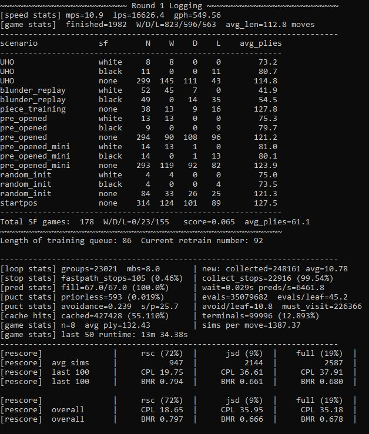

Selfplay Suite
Orchestration
scripts/run_selfplay.py is the entry point for a training run. It spawns N worker processes and runs a persistent outer loop that manages rescoring, retraining, and validation. Each worker runs child_looper(), which initializes a GameLooper and calls run().
Workers communicate with the main process through several multiprocessing queues:
recent_q— game results and per-game metadata (W/D/L, sims used, CPL after rescoring)telemetry_q— per-worker performance metrics (MPS, LPS, batch fill rate, cache hit rate)pause_q/unpause_q— synchronization signals sent during model reload between retrain epochs
The main process also maintains the retrain trigger: when the Rescorer has accumulated enough training examples (retrain_size), it pauses all workers, launches the retrain subprocess, waits for completion, broadcasts the new model path, then unpauses workers.

The live telemetry view aggregates across all workers and updates each reporting interval. Key metrics: moves/sec (MPS) and leaf evaluations/sec (LPS) reflect game and NN throughput respectively; games/hour gives the effective data generation rate; cache hit rate shows what fraction of leaf collections were resolved by the C++ priors cache without NN inference; PUCT stats and per-scenario W/D/L breakdowns make it easy to spot if one game type is producing systematically lopsided results.
GameLooper
GameLooper manages a pool of active_games (up to games_at_once concurrent ChessGame instances) and drives the inference loop. Every tree is registered with a single C++ MCTSForest, which owns leaf collection and board encoding across all games at once — the Python loop never touches individual leaf boards.
Each iteration:
forest.resolve_all_inflight()— settle any leaves whose NN results arrived last iteration.- For each active game,
game.tree.collect_many_leaves(this_mbs, max_fastpath)gathers new leaf nodes that need NN evaluation. Cache hits and terminals are resolved in C++ and don't surface here. A per-gamemicro_batchsets the target leaf count; unused budget rolls into abonusthat lets the next game temporarily double its microbatch, keeping the aggregate batch full. batch_encoder()— one C++ call (forest.get_all_encoded, orget_all_lc0_featuresfor thelc0_trtbackend) returns(keys_np, enc_np): the zobrist keys and encoded boards for every pending leaf in the forest.format_and_predict(keys, enc)— the encoded batch is sliced intomacro_batchchunks and run throughinfer(...), returning(policy_logits [B, 1858], wdl [B, 3]).raw_cache_bulk_insert_np(keys, wdl, logits)writes results into the C++ raw cache, where masking/softmax happen inbuild_priors.- On the next iteration
resolve_all_inflight()expands the waiting nodes and backpropagates. - Games that reach a terminal state are popped from the forest, finalized (serialized to pickle and enqueued for rescoring), and removed from
active_games;pull_from_queue()refills the pool.
The inference step is intentionally kept as the sole GPU operation. There is no per-game GPU work; encoding, cache lookups, and tree updates are all CPU-side C++, with Python only orchestrating.
Pause and reload. When the main process sends a pause signal, GameLooper tears down the inference session (del self.infer/del self.model), calls torch.cuda.empty_cache() for the PyTorch backends (the TRT backends need no explicit free), clears the priors cache, and blocks on the message queue until an unpause arrives. An unpause that arrives early is buffered so the wait can't deadlock. On resume it reloads the model from the path in the unpause message and rebuilds the inference function. VRAM is released before the retrain subprocess starts so both fit on the same GPU.
StockfishThread
StockfishThread runs a Stockfish engine on a background daemon thread, handling positions that need engine evaluation during selfplay — primarily for games played against Stockfish and for the vs-SF validation rounds.
Games submit a (game_id, board_fen) pair via submit(). The thread drains its input queue, runs Stockfish to the configured depth, and pushes (game_id, result_tuple) to a response queue. The result tuple contains (eval_cp_stm_pov, best_move_uci, wdl_tuple). Games poll the response queue at the start of each move.
Game Curriculum
GameGenerator selects starting positions according to a weighted scenario mix configured per run. The active 16m_precond curriculum is:
| Scenario | Weight | Description |
|---|---|---|
startpos |
13% | Standard starting position |
pre_opened_mini |
17.5% | Short opening lines (<= 2 moves) |
UHO |
20% | Unbalanced Human Openings, white to move at ply 16 |
pre_opened |
18% | Longer opening lines (> 2 moves) |
random_init |
17% | Random legal position from the opening phase |
random_middle_game |
11.5% | Random init advanced to ply 20-31 |
piece_odds |
2% | Material-unbalanced positions |
piece_training |
1% | Focused endgame piece training positions |
UHO positions come from UHO_XXL_2022_+100_+129.pgn, a corpus of unbalanced human games. All UHO positions are white-to-move at ply 16, ensuring the engine sees non-trivial positions with varied pawn structures early in training.
Game Adjudication
Games terminate on checkmate or draw by the rules, but several early-exit conditions are also active:
- Eval collar — if one side's evaluation stays above a threshold for
collar_n_consecconsecutive moves, the game is adjudicated as a win for that side. - Eval draw — if all evaluations within a rolling window stay near zero, the game is adjudicated as a draw.
- Max game length — hard cap to prevent runaway games.
Syzygy tablebase adjudication (<= 5 pieces) and material-diff cutoffs are also configurable per run. The adjudicator flags in effect for a game are recorded with its training data so rescoring knows how each outcome was reached.
Bootstrap Data Pipeline
Before self-play begins, the model is pretrained on a large static dataset built
from two sources. scripts/data/build_bootstrap_records.py is the canonical
tool for this.
lc0 source — lc0 V6 binary training chunks decoded directly to xc0h tokens
via v6_planes_to_xc0h (no float32 intermediate). Draws are dropped at 50%.
3 workers each drain a disjoint chunk subset.
xc0 source — Xerces selfplay game logs from historical run tags. For each
game that passes a GAME_CPL_MAX=20 filter, plies with SF analysis loss
<= MOVE_CPL_MAX=15 and tree search data are extracted. The board is replayed
through board.history_tokens(K=6) via pyfastchess to produce the xc0h
encoding, preserving full opening history via warm replay of the prefix. SF
moves are skipped. 4 workers each handle a disjoint subset of run tags.
Both sources produce records with schema:
xc0h_board int16[393] K=6 history frames + meta tokens
policy float32[1858] normalized visit distribution (no clipping)
wdl float32[3] Z_BLEND * result_wdl + (1-Z_BLEND) * search_wdl
Target is 20M records per source (40M total). Output goes to a staging
directory, then a single shuffle pass via scripts/data/shuffle_xco.py
produces the final training-ready shards.